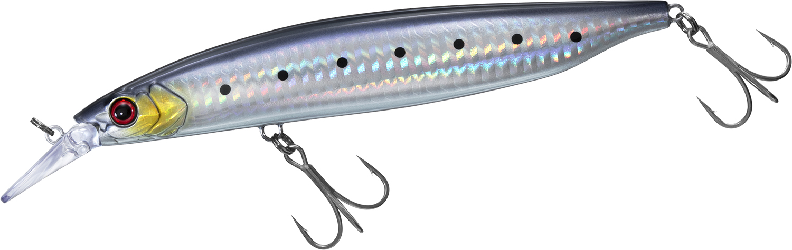
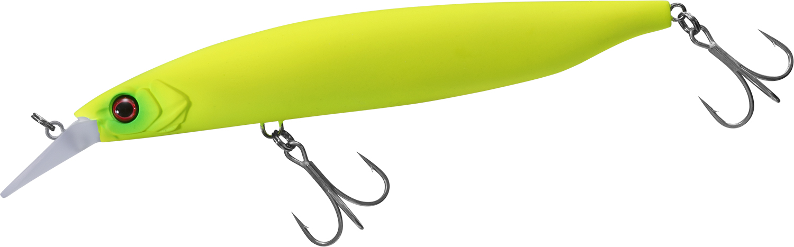
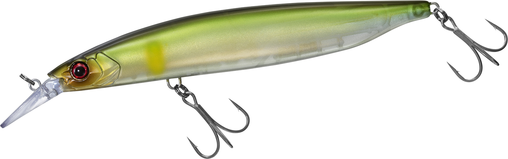

リベラリストミノー130S
（LIBERALIST MINNOW 130S）
リベラリストミノー130S（LIBERALIST MINNOW 130S）はDAIWA（ダイワ）のシンキングミノーです。
村上晴彦さんが監修した、「ターゲットに外道無し」をうたうビッグミノー。淡水・海水を選ばない"魚と遊ぶためのミノー"として作られ、動きで魅せるアクション重視の設計で、シーバスから淡水の大型魚まで幅広く狙えるのが最大の魅力です。

画像出典:DAIWA公式HP
スペック
- メーカー
- DAIWA（ダイワ）
- タイプ
- シンキングミノー
- 全長
- 130mm
- 自重
- 29.2g
- フック
- #3
- リング
- #3
- カラー
- 全6色
- ターゲット
- オールジャンル（シーバス・青物・淡水の大型魚など）
- 価格
- 2,500円（税抜）
- 発売
- 2026年3月
▼今すぐチェック
リベラリストミノー130Sの特徴
激しい波動のウォブンロールで魅せる、淡水・海水を問わないアクション重視のビッグミノー
-
激しい波動を出す5：5のウォブンロール
アクションはウォブリングとロールが5：5のウォブンロール。激しい波動で魚にルアーの存在を気づかせる。アクションの核となるリップ形状は、このウォブンロールと安定した直進性を両立させる設計だ。
-
タングステン2発＋スチール1発の重心移動システム
内部にはタングステンボール2発とスチールボール1発の重心移動システムを採用。安定したキャスタビリティと、アクションまで考えたウエイト配置で、130mmのボディでもストレスなく投げられる。
-
高速巻きにも耐えるウエイトバランス
速く巻いても泳ぎが破綻しにくいウエイトバランス設計。スローからハイスピードまで巻き速度を変えて誘えるので、淡水・海水を問わず、その日の魚の反応に合わせやすい。
リベラリストミノー130Sの使い方
基本はただ巻き。シンキングなので着水後にカウントダウンでレンジを決め、ウォブンロールの波動を出しながら一定速度で巻いてくる。
高速巻きにも対応するので、魚が速い動きに反応する時はスピードを上げてリアクションで食わせるのも有効。反応がなければ巻き速度やレンジを変えながら、その日に合う誘い方を探していきましょう。
リベラリストミノー130Sの得意な状況
ベイトが大きめで、強い波動のミノーで魚を寄せたい状況が最大の出番。
シーバスや青物はもちろん、淡水の大型魚まで「ターゲットに外道無し」で狙えるので、海でも川でも1本で魚と遊びたい場面や、いろいろな魚種を狙うフィールドで選びたい1本です。
ワンポイント
公式では、適合ロッドとしてハートランド リベラリストの「803MLRS-25」「863ML+RS-25」の2アイテムが挙げられています。
29.2gと重さのあるミノーなので、手持ちのロッドで使う場合は、ルアーウエイトの上限が30g前後まで対応しているかを確認しておくと安心です。
オススメカラー
リベラリストミノー130Sは全6色展開。淡水・海水どちらでも使いやすいカラーを厳選して紹介します。
 ミドキンイワシ
ミドキンイワシ
緑から金へのグラデーションにイワシのドットを入れた、ミドキン（緑金）系のアピールカラー。濁りやマズメの時間帯に。

レーザーマイワシレーザーのフラッシングで強く光を返すマイワシカラー。晴れた日や澄んだ水で広くアピール。

マットライムチャート濁りやローライトでもシルエットをはっきり見せるマットチャート。アングラーからも見やすい。

ゴーストアユ透け感のあるアユカラー。河川や湖で、アユを意識した魚に見切られにくく見せたい時に。
画像出典:DAIWA公式HP
リベラリストミノー130Sに似ているルアー
-
 サスケ120S裂風
アイマ
詳細はこちら＞
サスケ120S裂風
アイマ
詳細はこちら＞
逆風下でも飛ばせるシンキングミノー。120mmクラスのシンキングミノーを遠投して巻くという使い方がリベラリストミノー130Sと近い。
-
 セットアッパー125S-DR
ダイワ
詳細はこちら＞
セットアッパー125S-DR
ダイワ
詳細はこちら＞
同じダイワのぶっ飛びシンキングダイバー。より深いレンジをしっかり引きたい時の持ち替え先に。
-
 ザブラシステムミノー15F
ジップベイツ
詳細はこちら＞
ザブラシステムミノー15F
ジップベイツ
詳細はこちら＞
150mmのフローティングのビッグミノー。浅いレンジを餌っぽい泳ぎでゆっくり見せたい時に。